Kill All Kings began as a radio show during the first summer of covid-19, bringing together the sounds that kept us going through isolation: a hybrid compilation of feminist folk horror, village voice, hard techno, spoken word and pop across distances and decades.
Moving into programming artist moving image, we hold to our motivation of bringing new audiences to the work of artists whose work addresses the evolving worlds we live between with sincerity, humour and care.
Kill All Kings presents a screening of artist video that veers and ascends, challenging normative conceptions of the weird, the grotesque and the paranormal. Bringing together local and international artists, there is a particular focus on the use of sound as a driving force for storytelling: a phone call, an orchestral motif, techno-electronica beat, a pop song, birdsong and village voice.
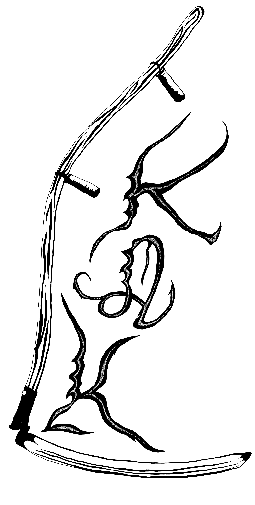
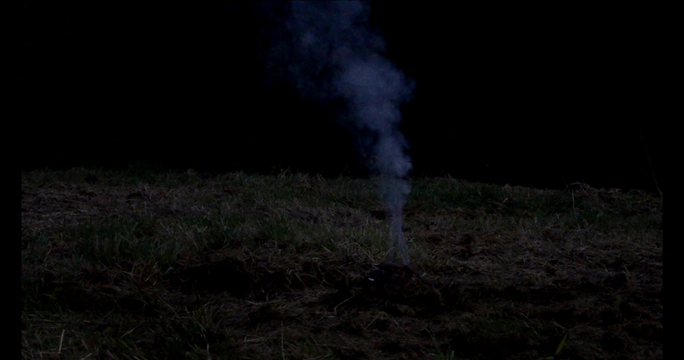
Will their fires keep you warm (2020)
7 minutes
A pile of sacred Hindu cow dung burns at dawn.
Smoke sways in the wind as the sound of British bird calls ascend in a dawn chorus;
the dung is reduced to embers.
The video is accompanied by a short text reflecting upon inherited trauma, and the violence of Partition, enacted during the independence of the Indian subcontinent from British colonial rule.
Despite the secular constitution established after the dissolution of the British Raj, there has been a steady call to right wing nationalism across India. The current ruling Hindu Nationalist party, the BJP, has been accused of encouraging a slew of violent acts against religious minorities, in part by the passing of bills that threaten the citizenship of those very Demographics.
Dung cakes, crafted in rural areas, are traditionally used in sacred Hindu rituals. They are now available for purchase internationally through the online retailer Amazon.
‧⁺˚*･༓☾
ANIKA AHUJA (b. 1991) is a multi-disciplinary, Indo-Canadian artist originally from unceded Tiohtià:ke (Montréal, Canada). Her work has been included in group exhibitions across North America, and she is currently living and working in Glasgow, Scotland.
anikaahuja.com
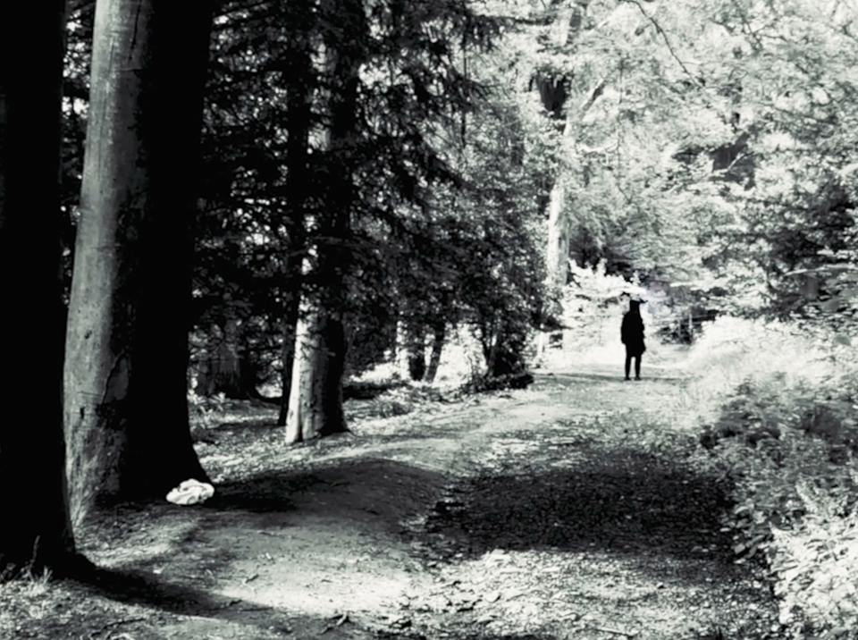
GPT3 (2021)
9 mins
GPT3 is an ongoing video piece filmed at local teenage hangouts at Linn Park Cemetery in Glasgow over the past year; intermixed with footage of tech destruction, Hellraiser quotes, early video synthesizer tests, found Satanic Panic VHS tapes and broken Y2K cameras.
The first part, GRAVEN IMAGE, encompasses questions that were posed to the Open AI (or neural-network-powered language model gpt30) on what its ‘intuitions’ are about human consciousness. The resulting trapped and disembodied voice recounts the ‘answers’ it gave through remnants of the Cemetery’s shifting and trashed debris. The concluding part, WE CAME, offers up for sacrifice an artifice of pixelated queer doom; here a sick voice unfolds a childhood campfire tale of night visitations. A story that was found, archived and then anonymously deleted on Reddit in 2020.
GPT3 is placed as a moving image work that is fragmented digital dust screen, an abyssal diary of artificial laments to past bookmarked regions, haunted esoteric tech futures and queer cosmic pessimism.
‧☆.。.:*
MICHELLE HANNAH is an artist, performing creature, dank sound maker, photographer, tutor and occasional curator. Currently Leo born & living in Glasgow.
@m_h_a_n_n_a_h
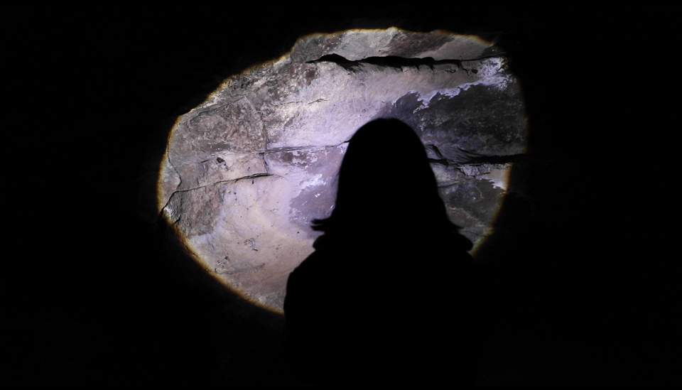
紅女郎傳說, The Mystery of Lady in Red (2020)
14 minutes
A woman is conducting research on a mystic female ghost haunting a coastal town. Known by the locals as ‘Lady in Red’, the female ghost always appears in a red dress, and within the shoreline where the waves can reach. Where ‘Lady in Red’ comes from and why she is trapped at the edge of the sea seems to remain a mystery. In the end, why the woman is so drawn to the enigmatic story of ‘Lady in Red’?
‧☆.。.:*
HIO LAM LEI (b. 1992, China) is a multidisciplinary artist working across sculpture, moving image, printmaking, photography and text making. She currently lives and works in Macau. She received her Master of Fine Art at the Glasgow School of Art in June, 2019. Lei has been interested in themes related to surveillance, self-censoring, gender norms, global warming and Ecocriticism.
hiolamlei.tumblr.com
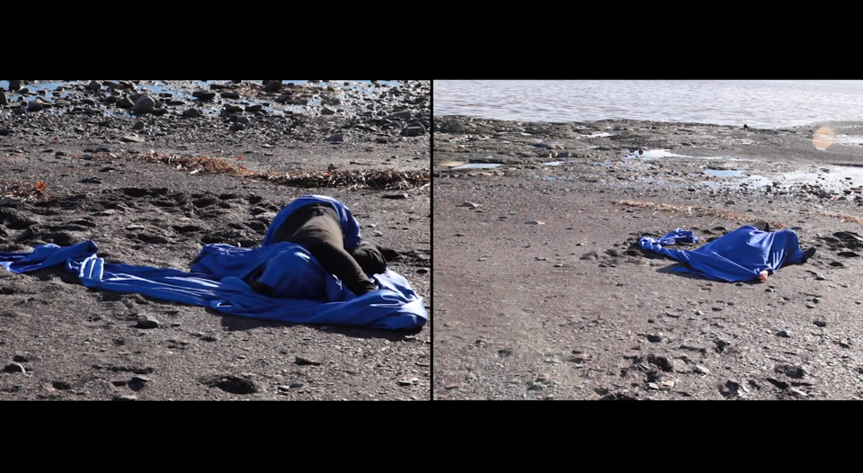
IN EXILE (2017)
10 minutes
This work aims to express the dualities and friction between cultures and language: my Iraqi heritage and western upbringing. The body moves between the two projections portraying two poles that interact, share mutuality, give and take, and at times collide and conflict, suggesting a struggle and a sense of frustration.
The small monitor contains a poem I pieced together drawing from a selection of Iraqi poets who write about concepts of exile, displacement, struggles of war, and dictatorship, and what it means to no longer belong to or reside in one’s nation and place of birth. This recitation re-appropriates and contextualizes Iraqi poetry in the form of a collage by using symbolism as a form of expression. The use of symbolic language is commonly found in Iraqi poetry as it demonstrates censorship under dictatorship regimes.
‧☆.。.:*
AYAM YALDO is a Montréal/Tiohtiá:ke based artist and recent graduate from Concordia University in the department of Intermedia. Working in a wide range of media including performance, video, sound and sculpture, her work explores narratives that shift between the personal and the political, the past and present, reality and myth. Yaldo’s current research is concerned with the formation of identity and subjectivity, and how these take shape in relation to grand historical narratives, the European tradition of archeology, artifacts, and her personal experience of war and displacement from the Middle East as a child. Focusing on the body, identity and image, Yaldo explores concepts of world building through reconstruction, transformation and ephemerality, in relation to forms of displacement.
Ayamyaldo.com @ayam_yaldo
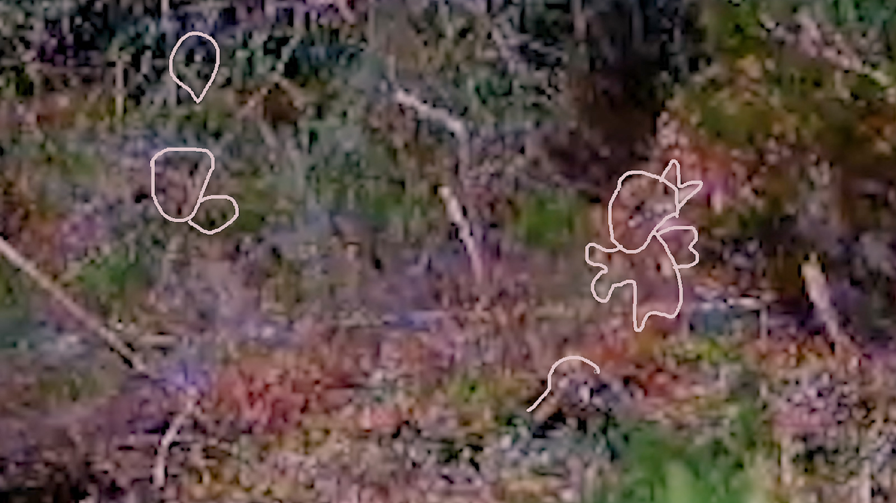
strangely, and as strangers (2021)
10 minutes
strangely, and as strangers reflects on the impulse to consume: breaking down and reconstituting material through biological and virtual bodies. The video weaves together the ghosts of a roman poet, a fairytale thief, geophagia, nursery rhyme, second sight, folk song and youtube gnome-seeking conspiracies.
‧☆.。.:*
FIONN DUFFY (b. Glasgow, 1991) is an interdisciplinary artist whose work challenges dominant ideologies of “progress” by re-framing cultural and historical material and bringing it into confrontation with current systems of production, ownership and ontological wrangling. She has exhibited across the UK and internationally and often works in collaboration with other artists, musicians, choreographers, enthusiasts and researchers.
fionnduffy.co.uk @fionn000
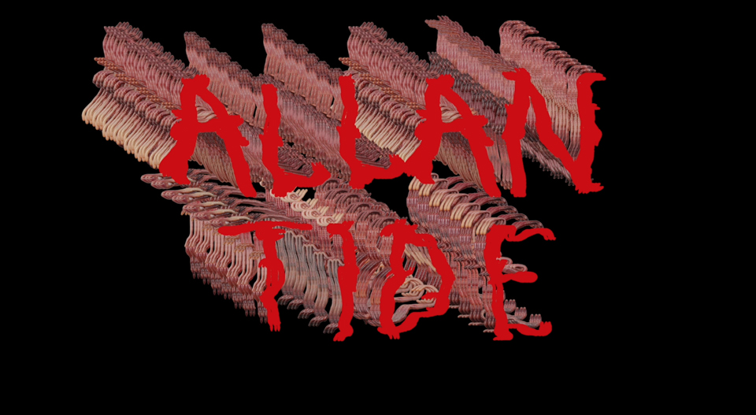
Allantide (2021)
5 minutes
Allantide is a festival traditionally celebrated on the night of the 31st of October. An important part of the festival was the giving of Allan apples. Large glossy red apples were polished and given to family and friends as tokens of good luck.
‧☆.。.:*
GEORGIA GENDALL is an artist living and working in Helston, Cornwall. Her practice takes on many forms; ranging from ludicrously impractical human powered contraptions and snappy ‘epic fail’ videos to curious ceramic sculptures, enduring sound works and public events. Georgia runs The Allotment Club; a project space on an allotment in Penryn, Cornwall and is in the second year of running Residency in a Shed; a residency in the shed on the allotment.
She is also the instigator of Forced Collaboration; a collaborative platform that aims to forge relationships between artists from different disciplines and locations, it has been running for four years and has facilitated over 200 collaboration between artists all over the world.
@georgiagendall
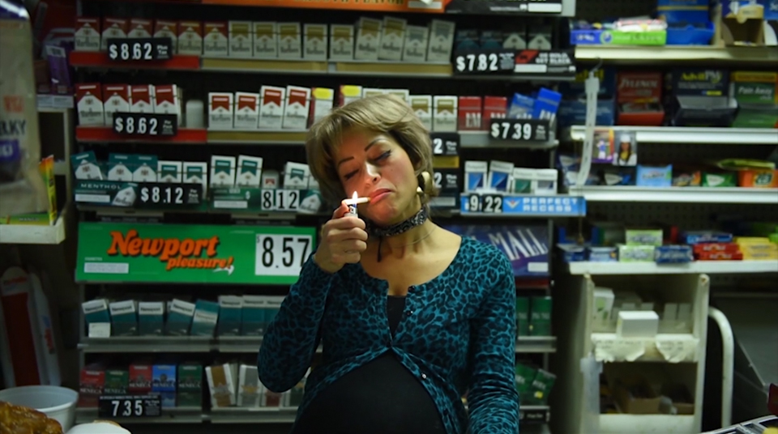
Sextra Curricular Activity (2016)
14 minutes
Sextra Curricular Activity is an experimental narrative that examines power, deviance, failure & desire through the lens of the absurd and surreal.
Storied depictions make way for ruptures- both celebratory and critical- debunking outmoded societal structures regarding race, class, gender and sexuality. Sound and vision simultaneously destabilize and ground the viewer as a way to enjoy the journey of transgressions of social mores. Stereotypes are reclaimed by a cast of characters that embrace the very biases that place them in the margins, allowing a plunge into alternate pasts, presents & futures that disregard power structures and embrace the authentic self.
‧☆.。.:*
HEATHER RAQUEL PHILLIPS is an interdisciplinary artist, independent curator and educator living and working in Philadelphia, Pa. Phillips received her BFA from Tyler School of Art and her MFA from University of Pennsylvania where she currently lectures. Phillips is a board member at the Leather Archives & Museum, upcoming apprentice at the Fabric Workshop & Museum and a recipient of the Leeway Foundation Transformation award 2020.
heatherraquelphillips.com
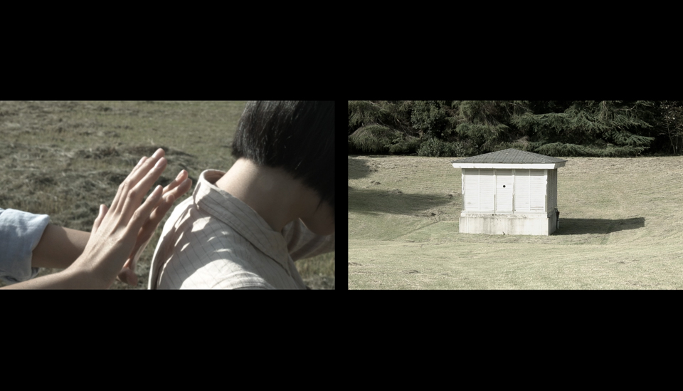
On Telepathy (2019)
17 minutes
On Telepathy depicts how others standing behind a person taking a video influence the captured image.
These “telepathy” experiments were executed in three different locations around Tokyo.
Directed by Maiko Jinushi
Performed by Maiko Jinushi, Ayaka Ura, Cabbage Perm, Megumi Tsuga
Camera by Yutaro Hashiba, Ayaka Ura, Cabbage Perm, Megumi Tsuga
Sound sampled from Maurice Ravel’s Boléro (1928). Berlin Symphonic Orchestra, conducted by Ferenc Fricsay, November 1956
‧☆.。.:*
MAIKO JINUSHI is a visual artist and filmmaker based in Tokyo. She obtained her MFA in Painting from Tama Art University in Tokyo and further studied at the Jan van Eyck Academie in Maastricht. Her work has evolved from drawings and novels on themes of personal tales to the creation of poetic narratives that comprehensively combines elements including video, multi-channel installations, performances to emerge questions what we are and how we live in the contemporary world.
maikojinushi.com
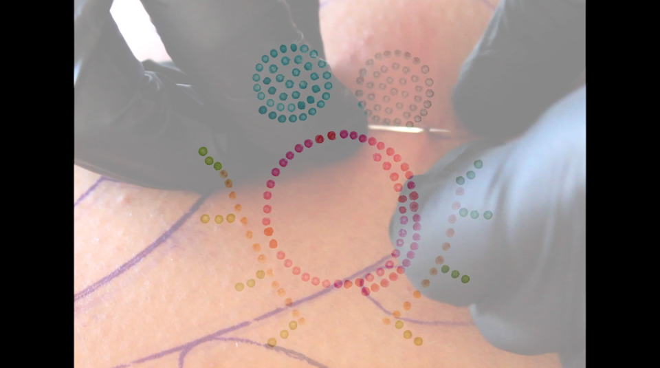
enn moduezis (2019)
4 minutes
enn modeuzis a film about the act of stitching and working with our hands. When I am sewing, I am stitching.
I am beading.
I am learning how to quill.
I am tattooing.
When I am working with my hands, I am connecting with my family near and far.
I am nurturing those around me.
I am caring for my relations from the past and caring for those that will come to be.
I am being cared for.
Working with our hands is research.
It is understanding old ways of knowing.
Creating from tangible touch is a way of visiting and learning from others. It is understanding yourself and what you inherently already know.
This film features family, their hands are present both physically and through their art. Much of the imagery in this film comes from beadwork from my maternal and paternal lineage. enn modeuzincludes skin stitching, harvesting quills, and sewing. All of these materials are in relation to adornment and by extension, our bodies. To wear these hand stitched items is to wear our identities. In times where the handmade is overlooked and traditions are seen as forgotten, taking the time to connect with our customs is a part of our revival.
‧☆.。.:*
AUDIE MURRAY is a Michif multi-disciplinary artist based in Otos-Kwunee (Calgary, Alberta; Treaty 7 territory). Her practice is informed by the process of making and visiting to explore themes of contemporary culture, embodied experiences and lived dualities. These modes of working assist with the recentering of our collective connection to body, ancestral knowledge systems, space and time.
audiemurray.com @audie.m_
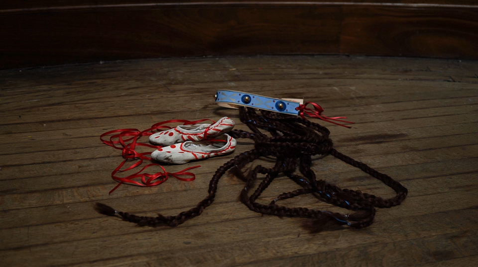
Rite of Return (2021)
12 minutes
Rite of Return is a moving image work that reflects on Marianne Hirsch’s generational return and post-memory introduced in Rites of Return whilst extending The Rite of Spring – a riot-inducing ballet originally performed by the Ballet Russes. The original narrative circled around a sacrificial virgin dancing herself to death, appropriated aesthetically and thematically from Slavic folklore. In my version, the dancer awakens amidst ecological decline, drawing upon old-country aphorisms and the poetic structures of Strakh vylyvaty or pouring forth the fear, a Ukrainian healing technique to remedy anxieties, especially those related to land. In folklore globally, themes of dance, desire and death are repetitive. These connections are important for me, as I believe that folklore will survive amongst congregations not defined as culturally specific. Instead it can be enveloped by like-minded individuals interested in intersectional dialogue and education, envisioning spaces of transformation through perseverance and practice.
‧☆.。.:*
AYLA DMYTERKO is a Ukrainian-Canadian artist based in Glasgow originally from the Treaty Four lands of the Plains Cree, Dakota, Denesuline, Lakota, Métis, Michif, Nakota, Ojibwe and Saulteaux Indigenous Peoples. She reactivates cultural memory in response to epistemological injustices to locate sites of transformation. Oscillating between reverence and regeneration, she collaborates with the past to understand how it is continuously modified and re-iterated to shape our social psyche and conceptions of the future. Through auto-ethnographic impulses, she works across moving image, dance, painting, sculpture, textiles and text, echoing the porous and precarious nature of diasporic imagination.
ayladmyterko.com @aylalldayla